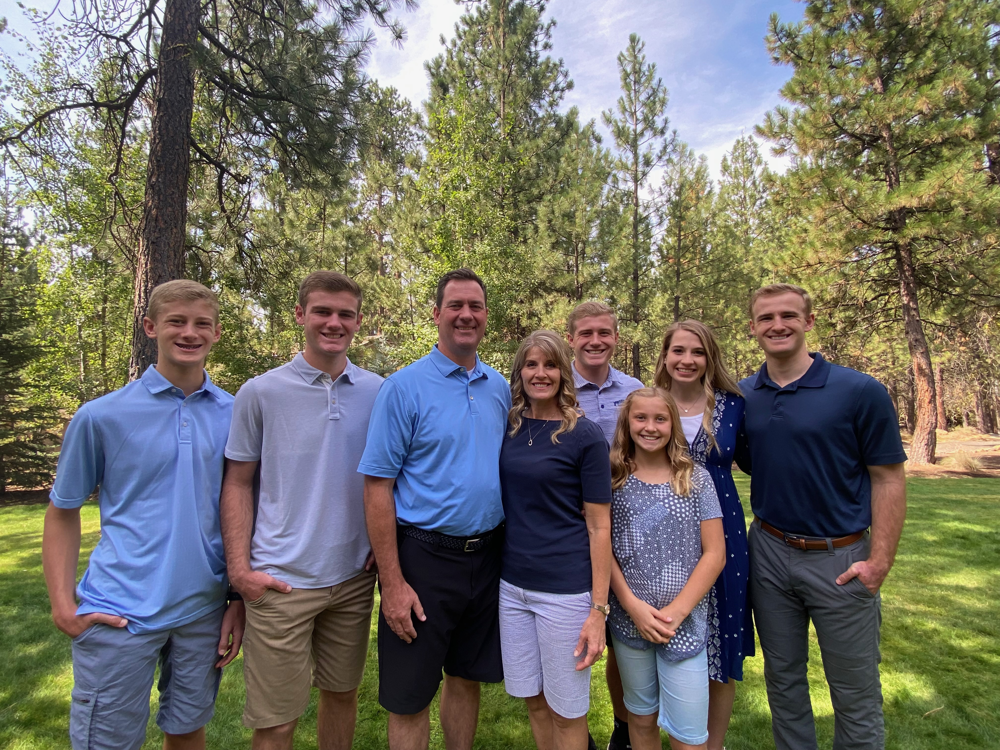
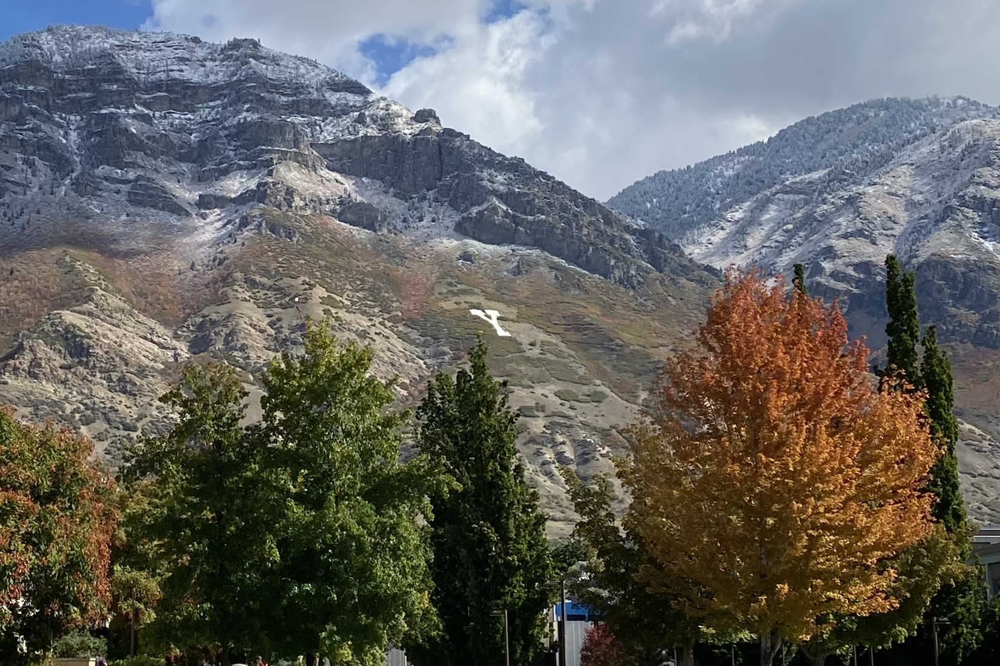

Background
I am from San Jose, California, born and raised. I have three rambunctious brothers, one sweet sister, and two wonderful parents. Growing up I loved playing basketball and golf and going surfing in Santa Cruz in the summer time. After high school I served a mission for the Church of Jesus Christ of Latter-day Saints in Tegucigalpa, Honduras and Mesa, Arizona. I learned to speak spanish and love spanish music and culture still. Click here to learn more about great spots to visit in Honduras!

I am currently a student at Brigham Young Universtiy hoping to study Accounting. I work at Eide Bailly LLP as a Business Outsourcing and Strategy Intern, which has a long name, but basically means I help clients with their accounting needs.
I am really enjoying school and working and am looking to do all I can to learn and work hard now so that I can have many opportunities down the road in my chosen field.
Resume
- Education
- Accounting Major Candidate Fall 2023
- 4.0 GPA at Brigham Young University - Fall 2022
- Pioneer High School Student-Athlete of the Year - 2018-2019
- Work Experience
- Business Outsourcing and Strategy Intern - Eide Bailly LLP - Current
- Business Analyst - Delaware North America - Jan to Apr 2022
- Teacher's Assistant - Hispanic Literature - BYU - Jan to Apr 2022
- Skills
- Familiar with Intuit QuickBooks Online
- Extensive experience with HubSpot Sales Hub
- Some experience with Tableau, MS Excell, Excel Visual Basic, SQL, HTML, and CSS
Contact Me
Phone: 801.123.4567
Email: joestepan@notmygmail.com